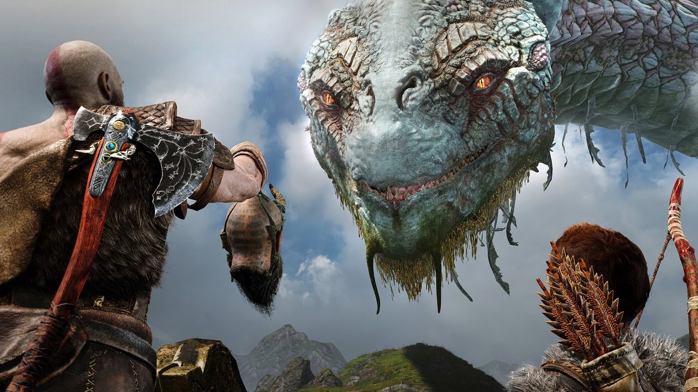

Na maioria das vezes sou calmo , sou extrovertido , muitas vezes me preocupo até demais com as pessoas , não ligo muito pro que acham de mim.
Gosto muito de ler , convesar , jogar , ouvir música , escrevo poemas , raramente desenho e gosto de estudar mas por conta própria
Geralmente no meu tempo livre costumo dormir , mas atualmente estou estudando violão e ingles
Sou muito fã de rock nacional como: ratos de porão , matanza , raimundos , velhas virgens. Mas também gosto bastante de bandas e artistas internacionais como o ozzy que é meu artista favorito. Minha música favorita dele é a "crazy train".
No meu tempo livre costumo jogar bastante meus jogos favoritos são: God of War , Doom e Mortal Komat.
